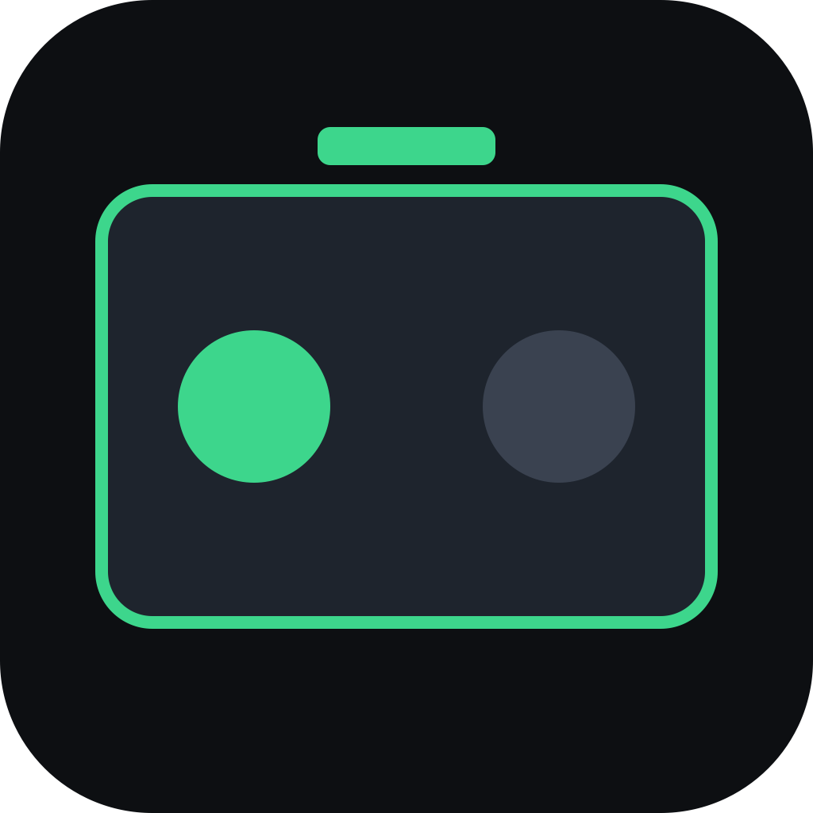
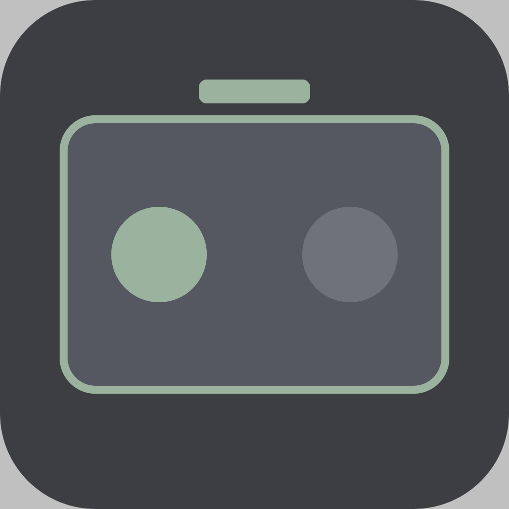

PiStomp Mobile — HDR logo
Keeper is the brand-color BT.2100 PQ JPEG. Open in Chrome on an XDR/EDR Mac — the green should look brighter than normal SDR white on the page.


pistomp-icon-hdr.jpg — BT.2100 PQ, mint green preserved and boosted.
File to use:
docs/hdr-logo-test/pistomp-icon-hdr.jpg.
Capture with Cmd-Shift-5 → Options → Capture Format → HDR if you want the glow in a screenshot.